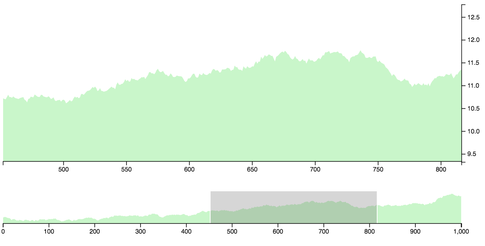

d3fc-brush View on GitHub View on unpkg
Adapts the D3 brush, making it easier to create data-driven, responsive brushed charts.
API Reference
General API
The d3fc-brush component adapts the d3-brush, to achieve the following:
- The d3fc-brush is data-driven, with the location of the brush determined by the data supplied via a data join. This makes it easier to create charts that are responsive (i.e, support re-sizing), integrate with other interactive components such as zoom, and create chart rendering logic that is idempotent.
- The d3fc-brush exposes
xScaleandyScaleproperties for integration with the multi series component and cartesian chart component. As a result the extent of the brush is automatically set based on the range of each axis. - The d3fc-brush selection (which defines the brushed range), is represented as a percentage, whereas d3-brush uses pixels. The use of a percentage selection makes it easier to resize a brushed chart.
- The brush events expose utility functions for computing the axis domain based on the current selection, making it easier to handle brush events and update the chart.
Creating a navigator chart
A common application of a brush is to create two linked charts, one which acts as a 'navigator', allowing the user to zoom in on a particular data region. The complete code for this example is found in the examples folder.
The d3fc brush is data-driven, so the first step is to create data object that combines the standard series data with a range that specifies the brush location:
var chartData = {
series: data,
brushedRange: [0, 1]
};The d3fc brush uses the same data format as the d3 brush:
For a two-dimensional brush, it is [[x0, y0], [x1, y1]], where x0 is the minimum x-value, y0 is the minimum y-value, x1 is the maximum x-value, and y1 is the maximum y-value. For an x-brush, it is [x0, x1]; for a y-brush, it is [y0, y1].
A multi series can be used to combine the brush with another series, for example an area series:
var brush = fc.brushX();
var multi = fc.seriesSvgMulti()
.series([area, brush])
.mapping((data, index, series) => {
switch (series[index]) {
case area:
return data.series;
case brush:
return data.brushedRange;
}
});The main and navigator charts are rendered using the cartesian chart component, with the navigator using the multi series defined above:
var mainChart = fc.chartSvgCartesian(x, y)
.plotArea(area);
var navigatorChart = fc.chartSvgCartesian(x.copy(), y.copy())
.plotArea(multi);
function render() {
d3.select('#main-chart')
.datum(chartData.series)
.call(mainChart);
d3.select('#navigator-chart')
.datum(chartData)
.call(navigatorChart);
}
render();The final step is to add event handlers to the brush. The event returns the updated selection together with xDomain and yDomain properties that are set to the domain represented by brushed region.
The event handler simply updates the data 'bound' to the chart to reflect the new selection and updates the domain of the main chart. Because the charts are idempotent and data-drive, all that remains is to invoke the render function.
var brush = fc.brushX()
.on('brush end', function(evt) {
chartData.brushedRange = evt.selection;
x.domain(evt.xDomain);
render();
});If you want to initialise the brush so that it does not occupy the entire range [0, 1], you'll need to set the initial domain for the main chart. This can be achieved by using a scale with the same domain and a unit range:
var scale = d3.scaleLinear().domain(x.domain());
x.domain(chartData.brushedRange.map(scale.invert));Brush
# fc.brush()
Creates a new two-dimensional brush.
# fc.brushX()
Creates a new one-dimensional brush along the x-dimension.
# fc.brushY()
Creates a new one-dimensional brush along the y-dimension.
# brush.on(typenames, [listener])
Adds an event listener for the given event types, see dispatch.on for details. The type must be one of the following:
start- at the start of a brush gesture, such as on mousedown.brush- when the brush moves, such as on mousemove.end- at the end of a brush gesture, such as on mouseup.
The event object exposes the following fields:
selection- the updated selection.xDomain- the x-domain represented by the given selection.yDomain- the y-domain represented by the given selection.
# brush.xScale(scale)
# brush.yScale(scale)
If scale is specified, sets the scale and returns this brush. If scale is not specified, returns the current scale.
# brush.filter([filter])
See d3-brush filter.
# brush.handleSize([size])
See d3-brush handleSize.
Found a problem in this page? Submit a fix!